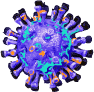

Welcome!
To your Digital COVID Care Package
or a Kind Survial Guide for this pandemic
“Caring for myself is not self-indulgence, it is self-preservation, and that is an act of political warfare.” -Audre Lorde
This is your digital webpage to navigate through hard times, remember to take of oneself in order to keeping being awesome!!
This website was created in response to the novel coronavirus, in particular the reading regarding Zoom Fatique (How to combat Zoom Fatique Zoom Fatigue
by Liz Fosslien and Mollie West Duffy) and
How To Live A Sensible Life In The Wake Of Covid-19?
as a way to look at the virus in a lighter approach to the ever dooming sensation that the virus has caused in fear, sadness, and many other labeled emotions.
Covid19

Purpose
In hopes to keep one mindful of the all the activities one can to take care of oneself and share with others. Mission: Combatting the biggest virus of all, loneliness. Together, we can face this virus with light approaches.
Directions
Navigate each Package Item for a little suprise on ways to stay connected, keep vusy, and feel like you have a companion!